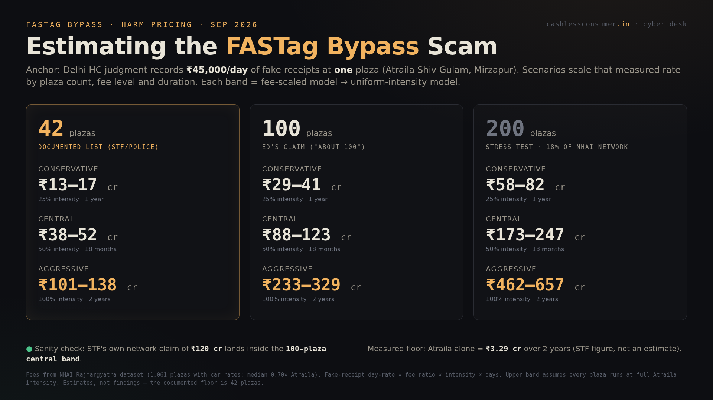

For roughly two years, unauthorised software on highway toll booth computers secretly pocketed cash from vehicles without a valid FASTag — printing receipts that looked perfectly honest — at ~100 plazas across 14+ states, while NHAI's national system recorded almost none of it. One self-taught developer built it; police caught it; the audits never did. This page summarises our 43-page report: the case, the numbers, the court reversal, and our demands.
What happened. On NH-35 in Mirzapur (UP), the toll contractor's staff ran a second, secret program on the booth computers alongside the official tolling software. When a car without a FASTag came through, the operator collected cash, and the secret program printed a barcoded receipt that looked real. That money never reached the concessionaire or the government. The official system saw a clean, boring day — because the secret program wrote exactly that. Only about 5% of the shadow takings ever entered the official record.
How big. UP's Special Task Force measured ₹45,000/day of suppressed cash at the one plaza it caught (Atraila Shiv Gulam) — about ₹3.3 crore over two years at a single booth. The accused named 42 plazas in 14 states; the ED's forensics now point to ~100. Our harm model (report §13C, anchored on that one measured number and scaled by public plaza fees) prices the plausible total at ₹13–17 crore (conservative) to ₹101–138 crore (aggressive) for the 42 known plazas — and ₹88–123 crore centrally if the ~100-plaza footprint ran the same way. Early "₹750 crore" headlines need 5× the measured intensity everywhere; we treat them as inflated.
Who. One self-taught developer built and franchised the software — the 42-plaza confession is his. He was arrested near Varanasi airport in January 2025 with laptops, phones and the receipt printer. Our open-data crosswalk (report §13B) adds a lead, not a verdict: of the resolvable scam plazas, 65–83% sat on IDFC FIRST Bank's acquiring rail — real statistical enrichment, best read as a map of where the merchant rail was thinnest, since the shadow takings were cash that never touched any bank.
Why nobody caught it. Audits read what the booth's official software reports. The secret software is the thing reporting. Every "all clear" was the fox filing the henhouse log. Detection came from a police sting — not from any audit, dashboard, certification or reconciliation flag, two years running.
Where it stands. NHAI's February 2025 crackdown — debarments and ~₹100 crore of forfeited guarantees — was set aside by the Delhi High Court in July 2026: a press note, one confession and statistics are not evidence, no agency employee was named in any charge sheet, and no shadow software was found on the petitioners' plazas. In September 2026 the Enforcement Directorate opened a money-laundering case, raided 14 premises, and its device forensics surfaced the ~100-plaza footprint. Careful reading: the fraud is well-evidenced; the map of who knew what is still being drawn — and the state's first enforcement attempt collapsed for lack of exactly that map.

These are estimates from public data, not court findings. The one hard number in the record is the STF's ₹45,000/day at Atraila; everything else scales it under two intensity assumptions and three coverage windows. Method and reproducible script: report §13C · open data.
| What officials said | Our model says |
|---|---|
| STF: ₹120 crore across the network | Consistent. Implies ₹2.9 crore/plaza ≈ 635 days at Atraila's measured intensity — inside our central band. |
| Early press: ₹750 crore | Inflated. Needs 5.4× Atraila's intensity at every plaza for two full years. No supporting evidence. |
| NHAI encashed ~₹100 cr in guarantees (later set aside) | Eerily close to our aggressive 42-plaza band (₹101–138 cr) — the state's gut feel matched the harm, even when its legal case didn't. |
| ED: receipts "running in crores", ~100 plazas | Consistent with the central 100-plaza band: ₹88–123 crore. |
The audit deficit was the vulnerability. For two years, no IT-audit function anywhere in the chain — IHMCL's device certification, NHAI's TMS audits, concessionaire supervision, bank reconciliation — could detect unauthorised code running on the plaza's own computer. The fixes announced since (TRAS, Unified ATMS, MLFF) deepen digitisation; none adds independent code-level audit of what runs at the lane.
Every new digital layer is new attack surface. The shadow app showed the pattern — an unauthorised program at the edge, feeding the centre what it expects to see. Now consider MLFF plate-recognition spoofable with printed stickers, and a Unified ATMS that centralises every lane's software into one national target. India is building a taller stack on the same unaudited foundation, and calling the height a fix.
Removing cash removed a redundancy, not a risk. Cash lanes were an accidental second channel — independent, offline, hard to fake at scale, and the one cross-check a driver could hold in hand. The April 2026 cash ban was sold as the fix for a fraud that software committed and audits missed. Cyber risk isn't reduced by removing redundancy; it is reshaped — and concentrated.
Mandate-first, audit-later is the design flaw. FASTag was made compulsory in 2021; cash was taxed in November 2025 and banned in April 2026 — and at every step the mandate preceded the audit. A payment system people cannot opt out of is, by definition, a system whose fraud controls must be proven before the mandate, not after the first scandal. The fraud had a field day because the system was compulsory before it was verifiable — and every undetected plaza spent public trust that "100% digital" claims now have to buy back.
We are pro-digital and pro-consumer. That combination has teeth only when payment systems are:
If you hold a suspicious toll receipt — wrong timestamps, wrong plaza, amounts off the schedule — report it to NHAI's helpline 1033 and to us. Consumer complaints have out-detected every dashboard in this file.